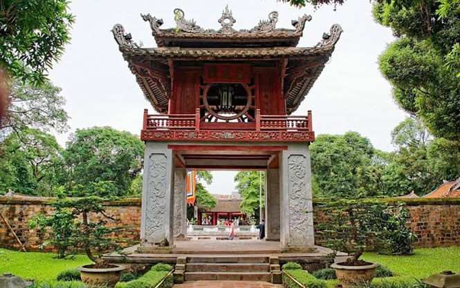

Hồ Gươm & Đền Ngọc Sơn
Hồ Gươm là biểu tượng của Hà Nội, nằm ở trung tâm thành phố. Cầu Thê Húc, Đền Ngọc Sơn và Rùa Hồ Gươm là những hình ảnh gắn liền với truyền thuyết lịch sử của thủ đô.
Hà Nội, thủ đô ngàn năm văn hiến, mang trên mình lịch sử phong phú và văn hóa đặc trưng. Thành phố nằm bên bờ sông Hồng, là trung tâm hành chính-chính trị, đồng thời là điểm giao thoa của nhiều giá trị văn hoá, nghệ thuật, ẩm thực và giáo dục.
Với hơn 5.000 di tích, trong đó có rất nhiều di tích quốc gia và một số di sản thế giới, Hà Nội giữ vai trò quan trọng trong nhận diện văn hóa dân tộc. Thủ đô vừa bảo tồn các giá trị truyền thống vừa không ngừng đổi mới để hội nhập và phát triển.
Hồ Gươm là biểu tượng của Hà Nội, nằm ở trung tâm thành phố. Cầu Thê Húc, Đền Ngọc Sơn và Rùa Hồ Gươm là những hình ảnh gắn liền với truyền thuyết lịch sử của thủ đô.
Được xem là trường đại học đầu tiên của Việt Nam, Văn Miếu là biểu tượng của truyền thống hiếu học. Khuôn viên nhiều cây xanh và kiến trúc độc đáo thu hút khách trong nước và quốc tế.
Lăng Bác là nơi nhân dân tôn kính, hàng triệu lượt khách viếng thăm mỗi năm. Công trình nằm trong quần thể Ba Đình, nơi từng diễn ra nhiều sự kiện trọng đại của dân tộc.

| Ngày | Sự kiện |
|---|---|
| 01/01 | Tết Dương Lịch |
| 30/04 | Giải phóng miền Nam |
| 01/05 | Quốc tế Lao động |
| 02/09 | Quốc khánh |
| 10/10 | Giải phóng Thủ đô |
| 20/10 | Ngày Phụ nữ Việt Nam |